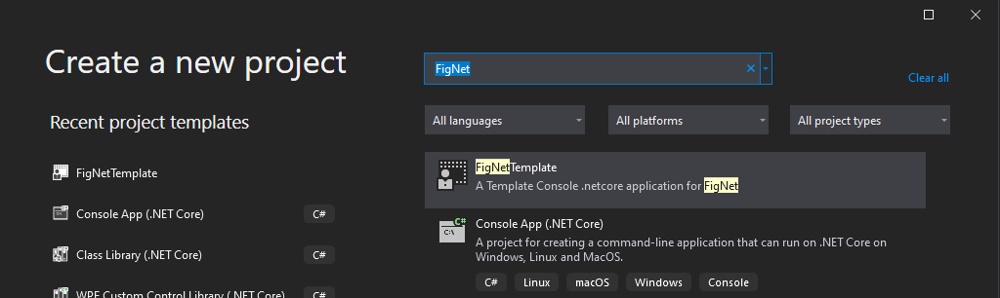
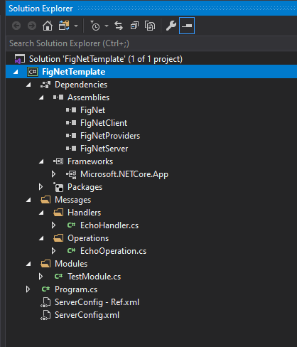

VISUAL STUDIO TEMPLATE
Download template & dlls from THIS link. Place the template as-is in “C:\Users\UserName\Documents\Visual Studio 2019\Templates\ProjectTemplates\Visual C#“ It will appears as follow in project creation window 
Add/Update following references
- FigNet.dll
- FigNetProviders
- FigNetServer
- FigNetClient [if application type is client]
OR to create project from scratch CONSOLE BASED SERVER; create new .Netcore console application.
Add following references
- FigNet.dll
- FigNetProviders
- FigNetServer
- FigNetClient [if application type is client]
Add following NuGet Packages
- ENet-CSharp
- LiteNetLib
- MessagePack
- Serilog
- Serilog.Sinks.Console
- Serilog.Sinks.File
- SimpleTCP.Core
- WebSocketSharp-netstandard

Set the provider of your choice & port number in ServerConfig.xml and run server